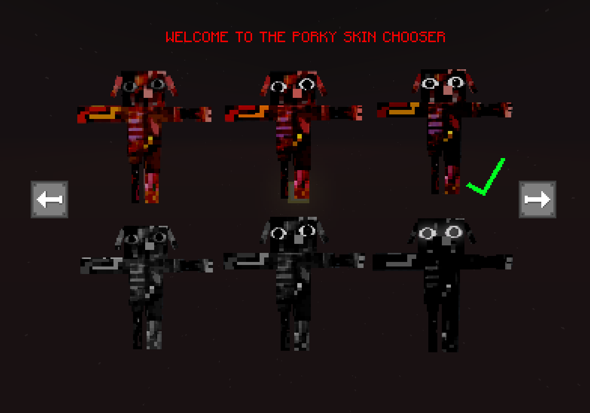
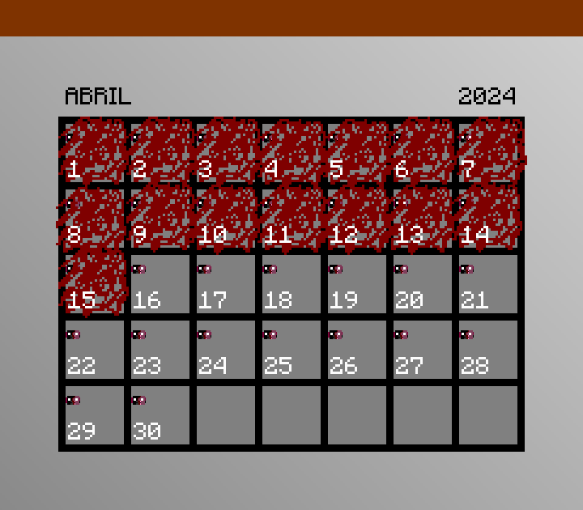

/gamerule isOmen (true/false)
When true this command will let the world continue to haunt the players with the entities.
This menu can only be accessed by Admins in Creative mode, this menu allow them to change the entity skin to one of the skins the game has.

The first official version of the Porky model made in 2022, now is known as PG wich is the virus created by Porky.
The first and only official version of him made in 2022.
This is a real time calendar wich would tell the player wich entity would activate that day, its completely random and changes every month.

/gamerule isOmen (true/false)When true this command will let the world continue to haunt the players with the entities.
/gamerule enableHallucinations (true/false)When true this command will let the world continue to haunt the players with hallucinations.
/NextEntityRoundThis command will execute the next entity.
/EntityAttackerMusic (11111/00000)You can allow every entity music by inserting a 1 (true) or 0 (false) like this: "11111", in this case all entities would have music.
here's an example how it chooses the entities:
1-Porky 2-Oveji Jones 3-Entity 3 4-Entity 4 5-Entity 5